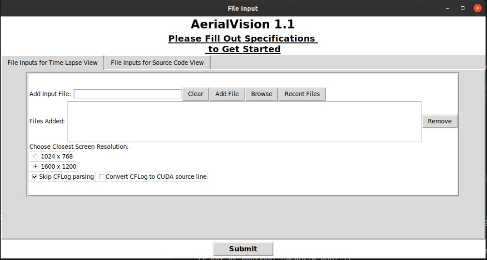
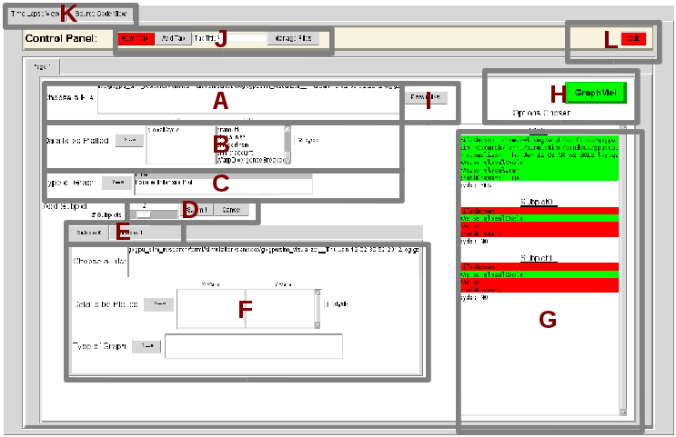
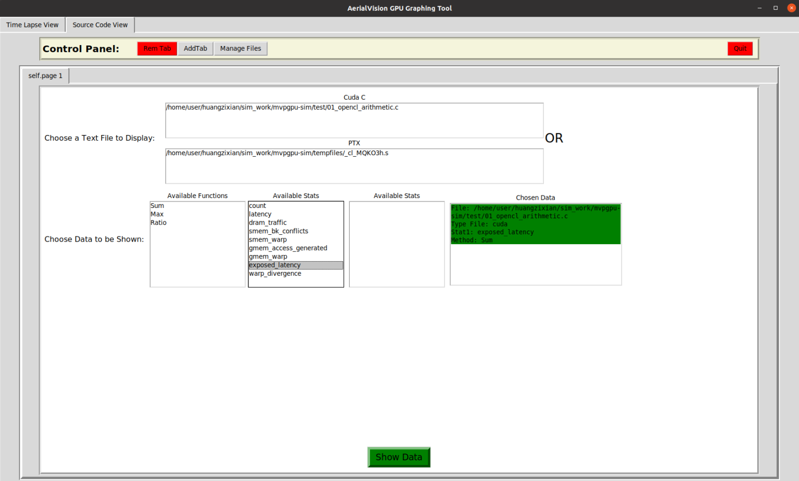

MVPGPU-Sim User Guide
This guide is only for how new developer to run application based on MVPGPU-Sim
Table of content
How to compile OpenCL application
Host compiling
If want to build OpenCL file, first to build MVPGPU-SIM to build OpenCL libraries.
source setup_environment debug | release
make
Then compile application file as below.
clang-7 -g -lOpenCL -DCL_TARGET_OPENCL_VERSION=120 -I /usr/local/cuda/include -L ../lib/ hello.c -o hello
Kernel built-in function lib
Because kernel built-in functions will be used only by kernel, so this lib should be compiled as .bc file by MVP compiler. Then using llvm-link link against it with shader bitcode file to produce a new bitcode file which contains all functions, final llc convert it as assemble file.
$
$ cd api/libopencl
$ clang-7 -x cl -emit-llvm -S -cl-std=CL1.2 -Xclang -finclude-default-header opencl_built_in_api.c -o ../../lib/opencl_built_in_api.bc
Kernel compiling
llvm-link just link files, don’t remove the unused functions
$
$ clang-7 -x cl -emit-llvm -S -cl-std=CL1.2 -Xclang -finclude-default-header _cl_Rasterizer -o _cl_Rasterizer.bc
$ llvm-link -only-needed _cl_Rasterizer.bc ../lib/opencl_built_in_api.bc -o _cl_Rasterizer.bc
$ llc -march=mvp _cl_Rasterizer.bc -o _cl_Rasterizer.s
How to compile Graphic application
Kernel compiling
clang-7 -emit-llvm -S -std=c++17 -I /usr/local/include/opencv4 -I ${GPGPUSIM_ROOT}/gpu/graphics/include -I ${GPGPUSIM_ROOT}/gpu/graphics/texture fs_shader.cpp -o fs_shader.bc
-L ${GPGPUSIM_ROOT}/lib
llc -march=mvp fs_shader.bc -o fs_shader.s
How to run application based on MVPGPU-Sim
source setup_environment debug
make
ldd application to check if link against MVPGPU-Sim’s xxx.so file

./hello_opencl
How to build and run OpenCL CTS
Building
$ $ cd test/OpenCL-CTS $ mkdir build $ cmake -B ./build -DCL_INCLUDE_DIR=$PWD/OpenCL-Headers -DCL_LIB_DIR=/home/user/liuyonggang/repo/mvpgpu-sim/lib -DOPENCL_LIBRARIES=OpenCL $ cmake --build ./build --config Debug $ cd build $ make
Running test cases
$ $ cd ~/repo/mvpgpu-sim $ ./test/OpenCL-CTS/build/test_conformance/basic/test_basic -h $ ./test/OpenCL-CTS/build/test_conformance/api/test_api -h
How to debug
launch.json file content as below.
{ "version": "0.2.0", "configurations": [ { "name": "(gdb) ????", "type": "cppdbg", "request": "launch", "program": "${workspaceFolder}/test/OpenCL-CTS/build/test_conformance/api/test_api", //smoke_test/01_opencl_arithmetic opencl: hello_opencl/vectorAdd cuda:cuadd cts:test_api get_device_info "args": ["load_single_kernel"], //This is case name "stopAtEntry": true, "preLaunchTask": "", "cwd": "${workspaceFolder}", "environment": [], "externalConsole": false, "MIMode": "gdb", "setupCommands": [ { "description": "?? gdb ????????????", "text": "-enable-pretty-printing", "ignoreFailures": true }, { "description": "?????????????????? Intel", "text": "-gdb-set disassembly-flavor intel", "ignoreFailures": true } ] } ] }
setup_environment
| Env Variables | Meaning | Comments |
|---|---|---|
| MVPGPUSIM_CONFIG_FILE_PATH | mvpgpu-sim.config's folder path |
Git
Create branch
git push origin new-branch-name:new-branch-name
Delete branch
git push origin --delete delete-branch-name
For example, The meaning of remotes/origin/test is that you have a branch called test in the remote server origin. So the command would be
git fetch --prune git branch -r git push origin --delete test
Tag
git tag //列出所有的标签名 git show <tag_name> //显示标签对应提交记录的具体信息 git ls-remote --tags origin //显示远端的tag git tag <tag_name> //当前分支所在的提交上打上轻量标签 git tag <tag_name> <commit hash value> //为某次具体的提交打上轻量标签 git tag -a <anotated_name> -m <tag_message> //为当前分支所在提交打上附注标签 git push origin <tag_name> //推送某个标签到远程仓库 git push origin --tags //推送所有标签到远程仓库 git tag -d <tag_name> //删除某个标签 git ls-remote --tags origin //找出要删除的远端标签，类似于ref/tags/<tag_name>的格式 git push origin :refs/tags/<tag_name> //删除远程仓库某个标签
Code Commit Flow
Update to the latest commit by
git pullbefore commit code modification, and fix conflict if there areFinish smoke test, and code can not be commited if smoke test fails
Commit code by
git commitand must modify relate items of commit messagePush the change to gerrit for review by
git push origin HEAD:refs/for/developingAdd reviewer in gerrit link
Resolve all comments or issues, and all patches should be commited from local rather than online fixes unless you are sure it’s no problem
Gerrit
How to restart (Executing the following bat by root user or wangyuwei@icubecorp.cn)
/home/gerrit/review-site/bin/gerrit.sh restart
How to add new user (New user should be added to related group by adminstrator or zhongwei@icubecorp.cn)
[liuyonggang@eda mvpgpu-doc]$ groups hw soc system
Aerialvision
How to start AerialVision
cd ~/mvpgpu-sim/ source setup_environment # + debug/release cd ~/mvpgpu-sim/tool/ python3 aerialvision_main.py
Launch Page  Here we need to upload all the files that are required here. These files are by default in the form gpgpusim_visualizer__*.log.gz. We submit files by clicking the
Browsebutton (if you’ve submitted the file before you can click on the Recent Files button), and then clickingAdd Fileonce the file’s path is in the Add Input File text field. Notice that you can submit numerous files for visualizing into this tab; however, for the purposes of this walkthrough we have limited it to one. Now click on the File Inputs for Source Code View tab. In this tab we submit files that present statistics corresponding to each line of PTX or CUDA/OpenCL source. Before clicking the
Now click on the File Inputs for Source Code View tab. In this tab we submit files that present statistics corresponding to each line of PTX or CUDA/OpenCL source. Before clicking the Add Filesbutton, it is necessary to insert the file paths to three distinct files required by this part of AerialVision. The file that goes in the Add CUDA/OpenCL Source Code File text field is the appropriate CUDA/OpenCL kernel source code file(.cu/.c).
The file that goes in theAdd Corresponding PTX Filetext field is the appropriate PTX file generated.
Finally, the file that goes in theAdd Corresponding Stat Fileis generated by the GPGPU-Sim and is by default named gpgpu_inst_stats.txt.
Once you have filled the three text fields, click the green Add Files button.
You can now launch AerialVision by clicking theSubmitbutton at the bottom. It should be noted that for your own purposes, it is not necessary to fill both the File Inputs for Time Lapse View and File Inputs for Source Code View tabs as both parts of AerialVision can be used independently of the other.Time Lapse View  We first need to Choose a File by double clicking on the trace file that we want to extra data from. Double clicking on one of the files should turn the appropriate section of the
‘Options Chosen’list green.
In B and C, we can choose which data to plot and their config such as with derivative or not and plot with line or Parallel Intensity Plot.THIS IS DEPEND ON THE STAT TO SHOW. YOU CAN FIND THE CONFIG IN ANOTHER TABLE.
You may now press the greenGraphMe!button. If you have followed this walkthrough correctly, all of the fields in the Option Chosen list should be green. After clicking the green
After clicking the green GraphMe!button, your screen should now look something like figure above.Source Code View  First we must choose the appropriate CUDA/OpenCL source file by clicking the appropriate file under the
Cuda Cheader. This should turn the File: under Chosen Data from red to green. Next, we will need to choose the appropriate PTX statistic aggregation method from underAvailable Functionsas well as Available Stats. Finally, click the greenShow Databutton at the bottom.